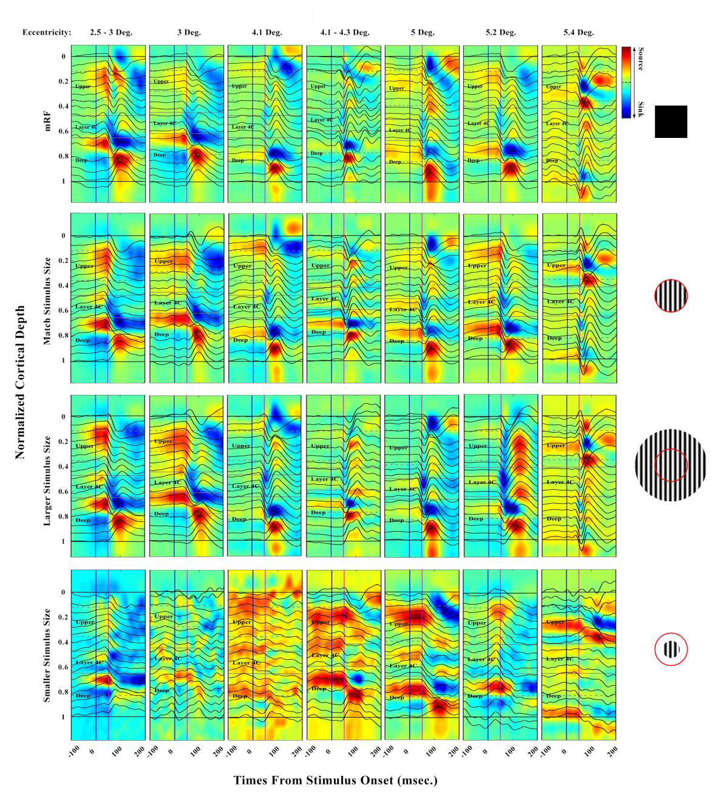
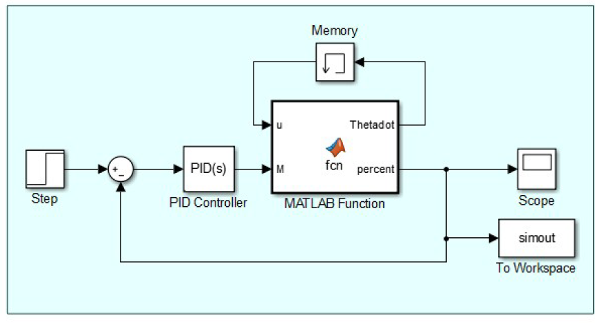
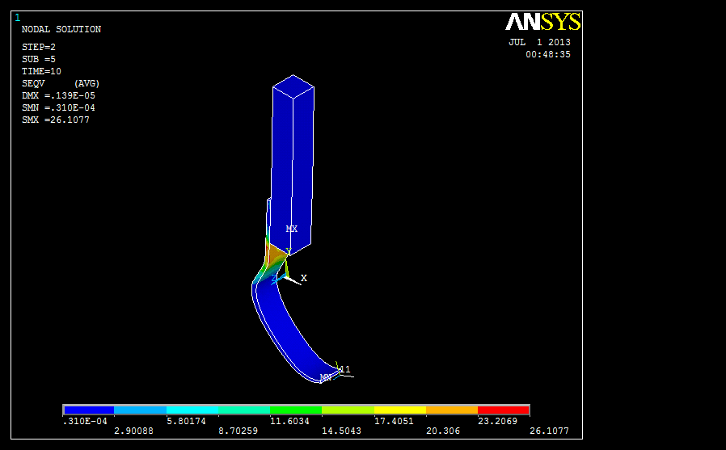
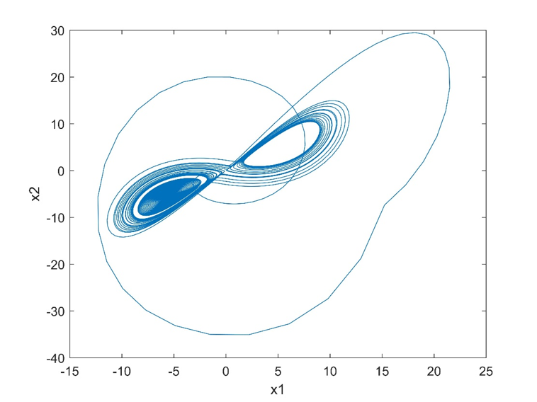
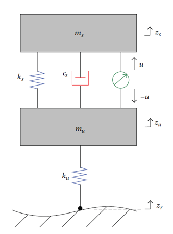
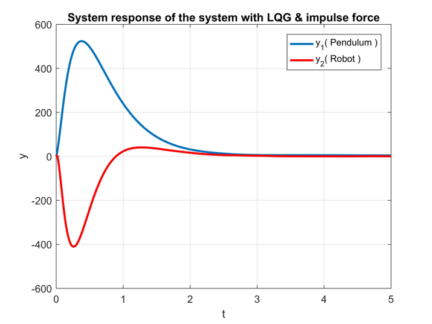
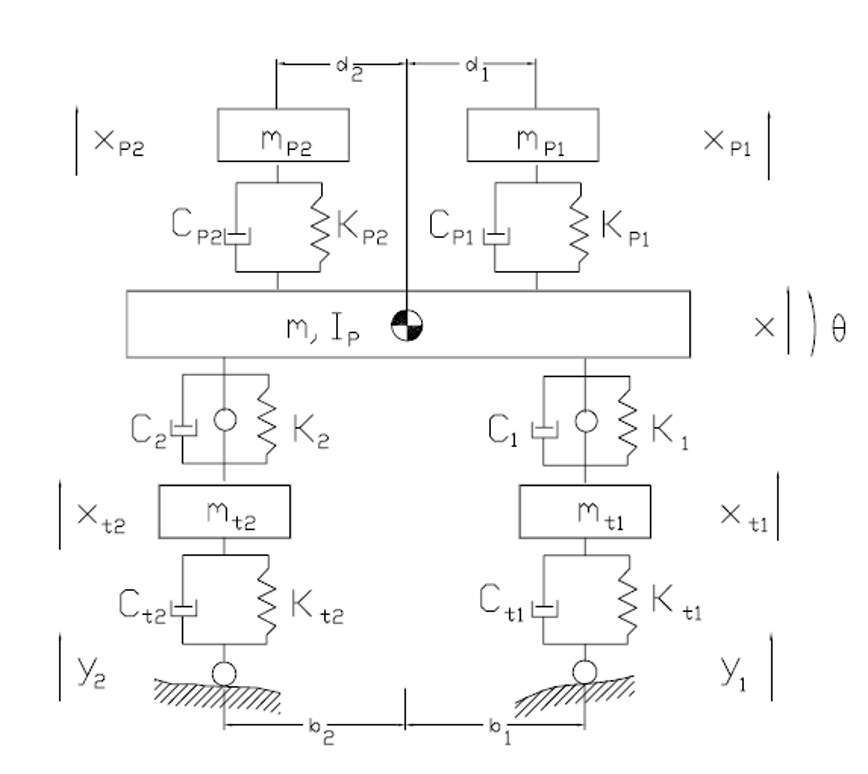
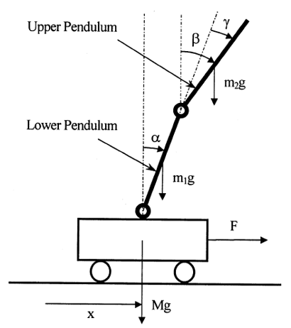
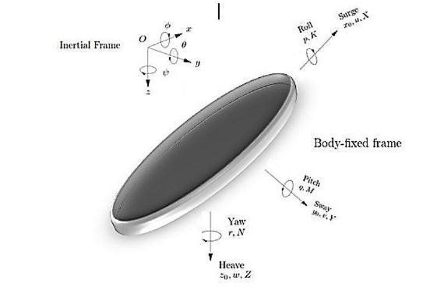
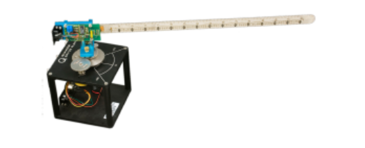

About
Mechanical Engineer with a PhD in Dynamics, Control, and Vibrations and multidisciplinary research experience spanning robotics, control, neural signal processing, computational neuroscience, and mathematical modelling. My research includes dynamic modelling and control of robotic systems and computational analysis of neural signals from the visual cortex. I am particularly interested in intelligent, adaptive, and robust control, autonomous systems, and AI-integrated robotics, with potential applications in healthcare and rehabilitation.
Research Interests
- Dynamics, Control & Optimization
- Robotics & Autonomous Systems
- Adaptive & Robust Control
- Nonlinear & Optimal Control
- Intelligent Control & AI-Integrated Systems
- System Identification & Mathematical Modelling
- Neural Signal Processing & Computational Neuroscience
- Signal Processing & Data-Driven Modelling
- Medical & Rehabilitation Robotics
Education
PhD in Mechanical Engineering - Applied Design - Dynamics, Control, and Vibrations
K. N. Toosi University of Technology, 2016-2023 | GPA: 18.13/20

PhD Thesis - Computational Neuroscience
Dynamic Mapping of Local Field Potential Signals across the Layers of the Primary Visual Cortex in Primate Monkeys
MSc in Applied Mechanical Engineering
Shahrood University of Technology, 2014-2016 | GPA: 17.24/20

MSc Thesis - Robotic
Modeling and Control of a Robotic Arm Actuated by Twisted String through Discrete Transfer Matrix
BSc in Solid Mechanical Engineering
Babol Noshirvani University of Technology, 2009-2013 | GPA: 16.36/20

BSc Project - Robotic
Modelling and Finite Element Analysis of the “CHEETA” Flexible Foot
Diploma in Mathematics and Physics Discipline
National Organization for Developing Exceptional Talents, 2005-2009 | GPA: 19.47/20
Publications
Professional Experience
Systems Analysis & Process Optimization Consultant, ABCHECK CO
Jun 2025 - Present
Analyze end-to-end manufacturing processes to identify bottlenecks and inefficiencies, using process mapping, performance indicators, and data-driven analysis to recommend improvements that reduce waste, improve resource and machine utilization, and increase operational efficiency.
Analyze end-to-end manufacturing processes to identify bottlenecks and inefficiencies, using process mapping, performance indicators, and data-driven analysis to recommend improvements that reduce waste, improve resource and machine utilization, and increase operational efficiency.
Industrial Drawing Instructor, K. N. Toosi University of Technology
Sep 2019 - Jan 2022
Delivered industrial drawing instruction to undergraduate students across Mechanical, Electrical, and Materials Engineering programs.
Delivered industrial drawing instruction to undergraduate students across Mechanical, Electrical, and Materials Engineering programs.
Neural Network Teaching Assistant, K. N. Toosi University of Technology
Jan 2019 - Jun 2020
Assisted in delivering the Neural Networks course by supporting students with course concepts, assignments, and technical problem-solving..
Assisted in delivering the Neural Networks course by supporting students with course concepts, assignments, and technical problem-solving..
Youth Entrepreneurship, Innovation & Creativity Coach, Teen Entrepreneurs Club
Academic Year 2022–2023
Delivered an 18-session educational coaching and mentoring programme for approximately 27 middle-school girls in an underserved area of Golestan Province, focusing on creativity, innovation, communication, problem-solving, technology exploration, teamwork, networking, and entrepreneurial thinking. Guided students through experiential activities including product ideation, industry exploration, product evaluation, and initial prototype development, using interactive games, group discussions, storytelling, and real-world examples. Completed professional training in Educational Coaching (Coaching) and received an Educational Coaching Certificate.
Delivered an 18-session educational coaching and mentoring programme for approximately 27 middle-school girls in an underserved area of Golestan Province, focusing on creativity, innovation, communication, problem-solving, technology exploration, teamwork, networking, and entrepreneurial thinking. Guided students through experiential activities including product ideation, industry exploration, product evaluation, and initial prototype development, using interactive games, group discussions, storytelling, and real-world examples. Completed professional training in Educational Coaching (Coaching) and received an Educational Coaching Certificate.
Selected Course Projects

Chaos control using sliding-mode theory
Sliding-mode control for suppressing chaos in nonlinear dynamical systems.

Static Output-Feedback Control for Vehicle Suspensions: A Single-Step Linear Matrix Inequality Approach
LMI-based static output-feedback control for vehicle suspension performance.

LQG Control Design for Balancing an Inverted Pendulum Mobile Robot
LQG control design for balancing an inverted-pendulum mobile robot.

Active Vehicle Suspensions with Optimal State Feedback Control
Optimal state-feedback control balancing ride comfort and vehicle handling.

Artificial Neural Network control of the inverted pendulum
Neural network control for stabilizing a double-link inverted pendulum.

Control of the Maya AUV
Dynamic modeling and horizontal position control of an AUV.

Discrete-Time Transfer Matrix Modeling of Flexible Robots under Feedback Control
DT-TMM modeling and dynamic analysis of flexible robot arms.
Skills
Dynamic Systems
Nonlinear Control
Optimal Control
Sliding-Mode Control
LQG
LMI-Based Control
Robotic Systems
System Identification
Engineering Leadership
MATLAB
MATLAB/Simulink
Python
Neural Networks
Signal Processing
Computational Analysis
MATLAB
CATIA
Team Leadership
Coaching
Training & Development
Teaching
Problem Solving
Languages
English: PTE Academic Overall 60
Persian: Native
Azeri: Native